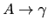

Sig: Análisis Sintáctico Mediante Precedencia Sup: Analizadores Descendentes Predictivos en Ant: Eliminación de la Recursión Con:
Partiendo del analizador sintáctico descendente predictivo recursivo para la gramática descrita en la sección 2.2.1
[~/javascript/PLgrado/predictiveRD/prdcalc(develop)]$ pwd -P /Users/casiano/local/src/javascript/PLgrado/predictiveRD/prdcalc [~/javascript/PLgrado/predictiveRD/prdcalc(develop)]$ git remote -v heroku git@heroku.com:predictiveparser.git (fetch) heroku git@heroku.com:predictiveparser.git (push) origin git@github.com:crguezl/prdcalc.git (fetch) origin git@github.com:crguezl/prdcalc.git (push)
views/main.coffee)
Véase el fichero views/styles.scss.
- al código de nuestra práctica.
Para ello, podemos extender nuestro gramática con una regla
de producción:
| expression
|
expression = ->
result = term()
if lookahead and lookahead.type is "+"
....
if lookahead and lookahead.type is "-"
match "-"
right = expression()
result =
type: "-"
left: result
right: right
Cuando le damos como entrada a = 4-2-1 produce el siguiente AST:
{
"type": "=",
"left": {
"type": "ID",
"value": "a"
},
"right": {
"type": "-",
"left": {
"type": "NUM",
"value": 4
},
"right": {
"type": "-",
"left": {
"type": "NUM",
"value": 2
},
"right": {
"type": "NUM",
"value": 1
}
}
}
}
que se corresponde con esta parentización: a = (4 - (2 - 1))
Este árbol no se corresponde con la asociatividad a izquierdas del operador
-. Es un árbol que refleja una asociación a derechas (a = 3).
Ahora bien, el lenguaje generado por dos reglas de la forma:
|
|
{ alpha_action } |
|  | { gamma_action } |
A = () ->
gamma() # imitar gamma
gamma_action() # acción semántica asociada con gamma
while lookahead and lookahead.type belongs to FIRST(alpha)
alpha() # imitar alpha
alpha_action()